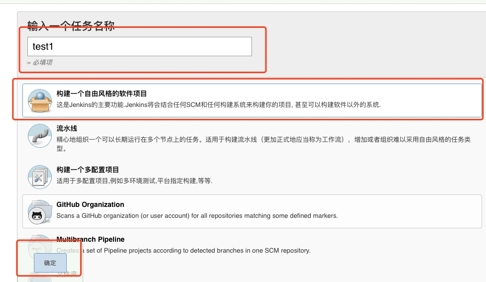

Jenkins结合Coding自动部署
原本以为使用Jenkins就是自动的把云端代码拉到本地，然后执行
1.pod install
2.脚本 ./build.sh
就可以了，没想到使用过程中遇到了太多太多问题，现在出个手摸手教程，希望可以帮助到大家少走点弯路
1.Jenkins下载地址
下载完成后按照提示下一步直到结束，安装成功后会打开一个网页，这里面有告诉你密码的位置，这里有个坑就是，储存密码的文件夹是打不开的，其实只需要右击显示简介，点击小锁，然后修改权限就可以了

2.安装插件
首先是把推荐的插件全部安装了，如果你比较懂这一块，可以选择性的安装，个人建议全部安装

安装完成后，在安装一个插件【Keychains and Provisioning Profiles Management】，插件这块就算是完成了，如下方式，可以进入安装插件的界面

 

搜索Keychains and Provisioning Profiles Management，然后安装就可以了
3.配置脚本命令
这个主要是解决构建脚本输入pod，fastlane等命令提示找不到的错误


上图中值的获取，打开终端
echo $PATH

然后将打印出来的信息copy到值处，这一步的作用可以理解为是给Jenkins配置命令的路径，是的在构建中输入脚本命令 pod fastlane等命令可以找到
4.配置证书和描述文件
按下图点开，如果你的电脑没有Keychains and Provisioning Profiles Management，那么请回到第2点，重新安装下这个插件


7的描述文件是你当前需要打包的那个app的描述文件，xcode的所有描述文件在/Users/你的用户名/Library/MobileDevice/Provisioning Profiles 这个文件夹下面
然后去你的电脑Jenkins的工作目录看一下

如果上面的KeyChains（这个是和证书相关的） 和 MobileDevice（这个是描述文件） 没有就需要手动copy，方法如下

有个点需要注意，打开钥匙串

上面两个证书一个是发布的，一个是开发的，需要注意的是，必须要确保系统里面也有这两个证书，不然的话在打包过程中，会说证书找不到

这里的主要作用是，配置打包所需要的证书和描述文件，这步很重要，如果这步没有做好后面会报错，一个是证书的错误，一个是描述文件的错误，具体可以看下这个经典错误
以上4步配置完成后就可以去创建项目，并打包了上传蒲公英了
5.创建任务

创建任务

General的配置

源码管理


这2中方式只要用一种就可以了，看自己习惯用哪种
1）用户名密码的方式添加

2）ssh的方式
用下面的命令生成公密钥
ssh-keygen -t rsa -C “nihenshuai@qq.com”
生成的公密钥在如下文件夹里面

 

ssh远程仓库的配置，这里以coding为例


触发器
触发器的作用，可以定义Jenkins自动拉取代码并打包上传的触发条件，这里我们先不定义
构建环境
不知道有什么用，没用过
构建
这个就是代码拉取下来后，告诉Jenkins怎么做的，选择shell的方式构建


export LANG=en_US.UTF-8
cd TestJenkins
pod install
IPANAME="jinkens-myapp"
fastlane gym --export_method ad-hoc --output_name \({IPANAME}
curl -F "file=@\){IPANAME}.ipa" -F "uKey=eb965f14edfbea223a7ce42b9325db86" -F "_api_key=5c88d7d1b1489f6e40419750276a7b8e" https://qiniu-storage.pgyer.com/apiv1/app/upload
这里的脚本需要根据你自己的项目文件夹情况重新稍微该一下，
第一行代码是设置编码方式
第二行第三行是用pod下载第三方，因为我的项目是在TestJenkins目录下，所以先cd进去，你们的可能直接是在项目文件夹下，就不用cd，直接pod install，后面的几句代码是蒲公英上面提供的打包上传代码，这里需要用到fastlane插件，如果下面提供的fastlane安装方法不好用，可以在百度或者Google搜索fastlane安装
fastlane插件安装
蒲公英上传脚本
到这里就可以实现从远程代码仓库拉取代码，并且打包上传至蒲公英了，具体操作如下

接下来将一下触发器的使用，这不做完就可以实现，当有代码推送到远程仓库，就出发任务，出发条件可以自行定义，这样就非常省事了